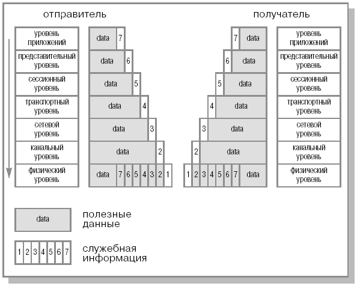
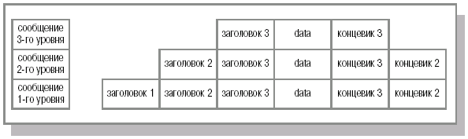
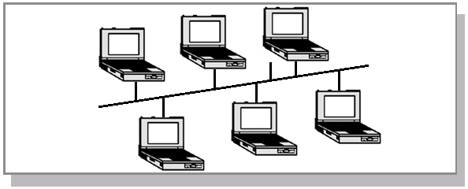
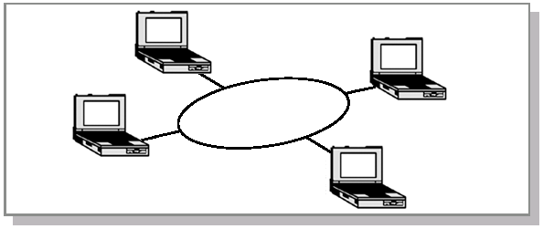
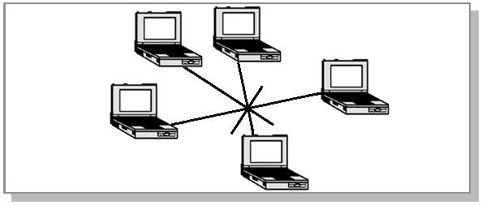
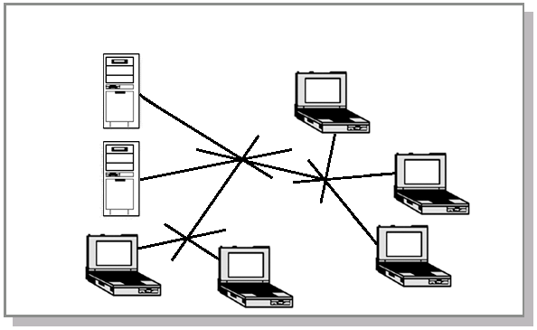

Основы модели OSI
В течение последних нескольких десятилетий размеры и количество сетей
значительно выросли. В 80-х годах существовало множество типов сетей.
И практически каждая из них была построена на своем типе оборудования
и программного обеспечения, зачастую не совместимых между собой. Это
приводило к значительным трудностям при попытке соединить несколько
сетей (например, различный тип адресации делал эти попытки практически
безнадежными).
Эта проблема была рассмотрена Всемирной организацией по стандартизации
(International Organization for Standardization, ISO) и было принято
решение разработать модель сети, которая могла бы помочь разработчикам
и производителям сетевого оборудования и программного обеспечения
действовать сообща. В результате в 1984 г. была создана модель OSI –
модель взаимодействия открытых систем (Open Systems Interconnected).
Она состоит из семи уровней, на которые разделяется задача организации
сетевого взаимодействия. Схематично они представлены в таблице 16.1.
Таблица 16.1.
Уровни модели OSI.
| Номер уровня |
Название уровня |
Единица информации |
| Layer 7 |
Уровень приложений |
Данные (data) |
| Layer 6 |
Представительский уровень |
Данные (data) |
| Layer 5 |
Сессионный уровень |
Данные (data) |
| Layer 4 |
Транспортный уровень |
Сегмент (segment) |
| Layer 3 |
Сетевой уровень |
Пакет (packet) |
| Layer 2 |
Уровень передачи данных |
Фрейм (frame) |
| Layer 1 |
Физический уровень |
Бит (bit) |
Хотя сегодня существуют разнообразные модели сетей, большинство
разработчиков придерживается именно этой общепризнанной схемы.
Рассмотрим процесс передачи информации между двумя компьютерами.
Программное обеспечение формирует сообщение на уровне 7 (приложений),
состоящее из заголовка и полезных данных. В заголовке содержится
служебная информация, которая необходима уровню приложений адресата
для обработки пересылаемой информации (например, это может быть
информация о файле, который необходимо передать, или операции, которую
нужно выполнить). После того, как сообщение было сформировано, уровень
приложений направляет его "вниз" на представительский уровень
(layer 6). Полученное сообщение, состоящее из служебной информации
уровня 7 и полезных данных, для уровня 6 представляется как одно целое
(хотя уровень 6 может считывать служебную информацию уровня 7).
Протокол представительского уровня выполняет необходимые действия на
основании данных, полученных из заголовка уровня приложений, и
добавляет заголовок своего уровня, в котором содержится информация для
соответствующего (6-го) уровня адресата. Полученное в результате
сообщение передается далее "вниз" сеансовому уровню, где также
добавляется служебная информация. Дополненное сообщение передается на
следующий транспортный уровень и т.д. на каждом последующем уровне
(схематично это представлено на рис.16.1). При этом служебная
информация может добавляться не только в начало сообщения, но и в
конец (например, на 3-м уровне, рис.16.2). В итоге получается
сообщение, содержащее служебную информацию всех семи уровней.

Рис.
16.1.
Инкапсуляция и декапсуляция пакета.

Рис.
16.2.
Добавление служебной информации в начало и конец пакета.
Процесс "обертывания" передаваемых данных служебной информацией
называется инкапсуляцией
(encapsulation).
Далее это сообщение передается через сеть в виде битов. Бит – это
минимальная порция информации, которая может принимать значение
0 или 1. Таким образом, все сообщение
кодируется в виде набора нулей и единиц, например,
010110101. В простейшем случае на физическом уровне для
передачи формируется электрический сигнал, состоящий из серии
электрических импульсов (0 - нет сигнала, 1 -
есть сигнал). Именно эта единица принята для измерения скорости
передачи информации. Современные сети обычно предоставляют каналы с
производительностью в десятки и сотни Кбит/с и Мбит/с.
Получатель на физическом уровне получает сообщение в виде
электрического сигнала (рис.16.3). Далее происходит процесс, обратный
инкапсуляции,– декапсуляция
(decapsulation).
На каждом уровне происходит разбор служебной информации. После
декапсуляции сообщения на первом уровне (считывания и обработки служебной
информации 1-го уровня) это сообщение, содержащее служебную информацию
второго уровня и данные в виде полезных данных и служебной информации
вышестоящих уровней, передается на следующий уровень. На канальном (2-м)
уровне снова происходит анализ системной информации и сообщение передается
на следующий уровень. И так до тех пор, пока сообщение не дойдет до уровня
приложений, где в виде конечных данных передается принимающему
приложению.
Рис.
16.3.
Представление данных в виде электрического импульса.
В качестве примера можно привести обращение браузера к web-серверу.
Приложение клиента – браузер – формирует запрос для получения
web-страницы. Этот запрос передается приложением на уровень 7 и далее
последовательно на каждый уровень модели OSI. Достигнув физического
уровня, наш первоначальный запрос "обрастает" служебной информацией
каждого уровня. После этого он передается по физической сети (кабелям)
в виде электрических импульсов на сервер. На сервере происходит разбор
соответствующей системной информации каждого уровня, в результате чего
посланный запрос достигает приложения web-сервера. Там он
обрабатывается, после чего клиенту отправляется ответ. Процесс отправки
ответа аналогичен отправке запроса – за исключением того, что сообщение
посылает сервер, а получает клиент.
Так как каждый уровень модели OSI стандартизирован, потребители могут
использовать совместно оборудование и программное обеспечение различных
производителей. В результате web-сервер под управлением операционной
системы Sun Solaris может передать HTML-страницу пользователю
MS Windows.
Разумеется, совместимость можно обеспечить лишь до некоторого уровня.
Если одна машина передает данные в виде радиоволн, а другая в виде
световых импульсов, то их взаимодействие без использования
дополнительного оборудования невозможно. Поэтому было введено понятие
сете-независимых и сете-зависимых уровней.
Три нижних уровня – физический, канальный и сетевой – являются
сете-зависимыми. Например, смена
Ethernet на ATM влечет за
собой полную смену протокола физического и канального уровней.
Три верхних уровня – приложений, представительский и сессионный –
ориентированы на прикладные задачи и практически не зависят от
физической технологии построения сети. Так, переход от
Token Ring на
Ethernet не требует
изменений в перечисленных уровнях.
Транспортный уровень является промежуточным между сете-зависимыми и
сете-независимыми уровнями. Он скрывает все детали функционирования
нижних уровней от верхних. Это позволяет разработчику приложений не
задумываться о технических средствах реализации транспортировки сетевых
сообщений.
Вместе с названием сообщение
(message) в стандартах ISO
для обозначения единицы данных используют термин
протокольный блок данных
(Protocol Data Unit,
PDU). В разных
протоколах применяются и другие названия, закрепленные стандартами, или
просто традиционные. Например, в семействе протоколов TCP/IP протокол
TCP разделяет поток данных на сегменты, протокол UDP работает с
датаграммами (или дейтаграммами, от datagram), сам протокол IP
использует термин пакеты. Часто так же говорят о кадрах или фреймах.
Для более глубокого понимания принципов работы сети рассмотрим каждый
уровень по отдельности.
Physical layer (layer 1)
Как видно из общей схемы расположения уровней в модели OSI, физический
уровень (Physical layer)
самый первый. Этот уровень описывает среду передачи данных.
Стандартизируются физические устройства, отвечающие за передачу
электрических сигналов (разъемы, кабели и т.д.) и правила формирования
этих сигналов. Рассмотрим по порядку все составляющие этого уровня.
Большая часть сетей строится на кабельной структуре (хотя существуют
сети, основанные на передаче информации с помощью, например, радиоволн).
Сейчас существуют различные типы кабелей. Наиболее распространенные из
них:
- телефонный провод;
-
коаксиальный кабель;
-
витая пара;
-
оптоволокно.
Телефонный кабель начал использоваться для передачи данных со
времен появления первых компьютеров. Главным преимуществом телефонных
линий было наличие уже созданной и развитой инфраструктуры. С ее
помощью можно передавать данные между компьютерами, находящимися на
разных материках, так же легко, как и вести разговор людям, которые
находятся за много тысяч километров друг от друга. На сегодняшний день
использование телефонных линий также остается популярным. Пользователи,
которых устраивает небольшая скорость передачи данных, могут получить
доступ к Internetу со своих домашних компьютеров. Основными недостатками
использования телефонного кабеля является небольшая скорость передачи,
т.к. соединение происходит не напрямую, а через телефонные станции. При
этом требование к качеству передаваемого сигнала при передаче данных
значительно выше, чем при передаче "голоса". А так как большинство
аналоговых АТС не справляется с этой задачей (уровень "шума", или
помех, и качество сигнала оставляет желать лучшего), то скорость
передачи данных очень низкая. Хотя при подключении к современным
цифровым АТС можно получить высокую и надежную скорость связи.
Коаксиальный кабель
использовался в сетях еще несколько лет назад, но сегодня это большая
редкость. Такой тип кабеля по строению практически идентичен обычному
телевизионному коаксиальному кабелю –
центральная медная жила отделена слоем изоляции от оплетки. Некоторые
отличия есть в электрических характеристиках (в телевизионном кабеле
используется кабель с волновым сопротивлением 75 Ом, в сетевом – 50 Ом).
Основными недостатками этого кабеля является низкая скорость передачи
данных (до 10 Мбит/с), подверженность воздействиям внешних помех. Кроме
того, подключение компьютеров в таких сетях происходит параллельно, а
значит, максимальная возможная скорость пропускания делится на всех
пользователей. Но, по сравнению с телефонным кабелем,
коаксиал
позволяет объединять близко расположенные компьютеры с намного лучшим
качеством связи и более высокой скоростью передачи данных.
Витая пара
("twisted pair") –
наиболее распространенное средство для передачи данных между компьютерами.
В данном типе кабеля используется медный попарно скрученный провод, что
позволяет уменьшить количество помех и наводок, как при передаче сигнала
по самому кабелю, так и при воздействии внешних помех.
Существует несколько категорий этого кабеля. Перечислим основные из
них. Cat 3 – был стандартизирован в 1991 г., электрические
характеристики позволяли поддерживать частоты передачи до 16 МГц,
использовался для передачи данных и голоса. Более высокая категория –
Cat 5, была специально разработана для поддержки высокоскоростных
протоколов. Поэтому его электрические характеристики лежат в пределах
до 100Мгц. На таком типе кабеля работают протоколы передачи данных
10, 100, 1000 Мбит/с. На сегодняшний день кабель Cat5 практически
вытеснил Cat 3. Основное преимущество
витой пары перед телефонными и
коаксиальными кабелями –
более высокая скорость передачи данных. Также использование Cat 5 в
большинстве случаев позволяет, не меняя кабельную структуру, повысить
производительность сети (переходом от 10 к 100 и от 100 к 1000 Мбит/с).
Оптоволокно используется
для соединения больших сегментов сети, которые располагаются далеко друг
от друга, или в сетях, где требуется большая полоса пропускания,
помехоустойчивость. Оптический кабель состоит из центрального проводника
света (сердцевины) – стеклянного волокна, окруженного другим слоем стекла –
оболочкой, обладающей меньшим показателем преломления, чем сердцевина.
Распространяясь по сердцевине, лучи света не выходят за ее пределы,
отражаясь от покрывающего слоя оболочки. Световой луч обычно формируется
полупроводниковым или диодным лазером. В зависимости от распределения
показателя преломления и от величины диаметра сердечника различают:
- одномодовое волокно;
- многомодовое волокно.
Понятие "мода" описывает режим распространения световых лучей в
сердечнике кабеля. В одномодовом кабеле используется проводник очень
малого диаметра, соизмеримого с длиной волны света. В многомодовом
кабеле применяются более широкие сердечники, которые легче изготовить.
В этих кабелях в сердечнике одновременно существует несколько световых
лучей, отражающихся от оболочки под разными углами. Угол отражения луча
называется модой луча.
Оптоволокно обладает
следующими преимуществами: устойчивость к электромагнитным помехам,
высокие скоростные характеристики на больших расстояниях. Основным
недостатком является как дороговизна самого кабеля, так и трудоемкость
монтажных работ, так как все работы выполняются на дорогостоящем
высокоточном оборудовании.
Физический уровень также отвечает за преобразование сигналов между
различными средами передачи данных. Например, при необходимости
соединить сегменты сети, построенные на
оптоволокне и
витой паре,
применяют так называемые конверторы (в данном случае они преобразуют
световой импульс в электрический).
Для включения компьютера в сеть используется специальное устройство –
сетевой адаптер
(Network adapter),
позволяющий обмениваться наборами битов, представленными электрическими
сигналами. Сетевая карта
(так чаще называют
сетевой адаптер)
обычно имеет шину ISA или PCI для подключения в компьютер и
соответствующий разъем для подключения к среде передачи данных (например,
для витой пары,
коаксиал и т.п.).
Теперь, когда мы знаем, как происходит соединение компьютеров в одну
сеть, рассмотрим варианты физической схемы такой сети, или, другими
словами, физической топологии (структуры локальной сети).
Топология "шина" (bus) показана на рис. 16.4.

Рис.
16.4.
Топология "шина" (bus).
Все компьютеры и сетевые устройства подсоединены к одному проводу и
фактически напрямую соединены между собой.
Топология "кольцо" (ring) показана на рис. 16.5.

Рис.
16.5.
Топология "кольцо" (ring).
Кольцо состоит из сетевых устройств и кабелей между ними, образующих
одно замкнутое кольцо.
Топология "звезда" показана на рис. 16.6.

Рис.
16.6.
Топология "звезда" (star).
Все компьютеры и сетевые устройства подключены к одному центральному
устройству.
Топология "расширенная звезда" (extended star) показана на рис. 16.7.

Рис.
16.7.
Топология "расширенная звезда"(extended star).
Такая схема практически аналогична топологии "звезда", за одним
исключением. Каждое устройство соединено с локальным центральным
устройством, а оно, в свою очередь, соединено с центром другой "звезды".
|